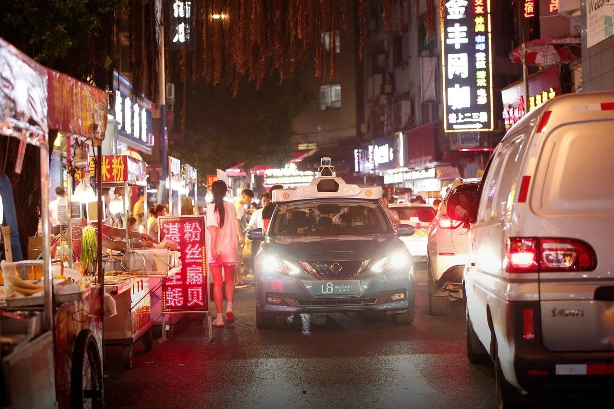
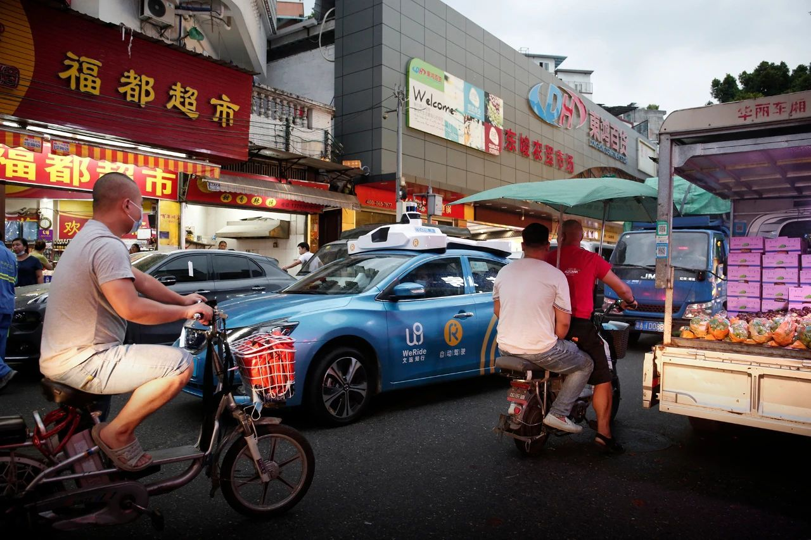
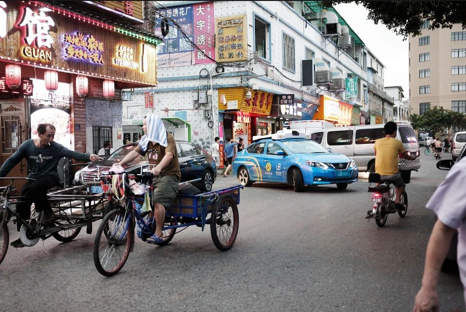
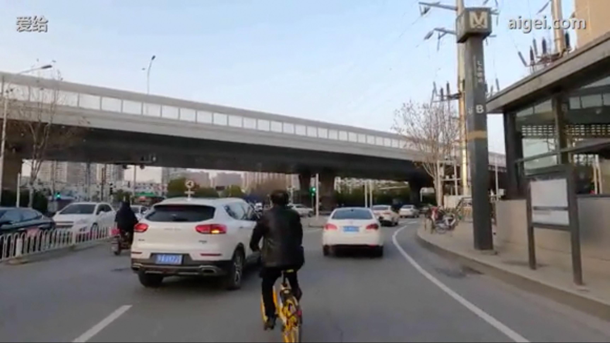
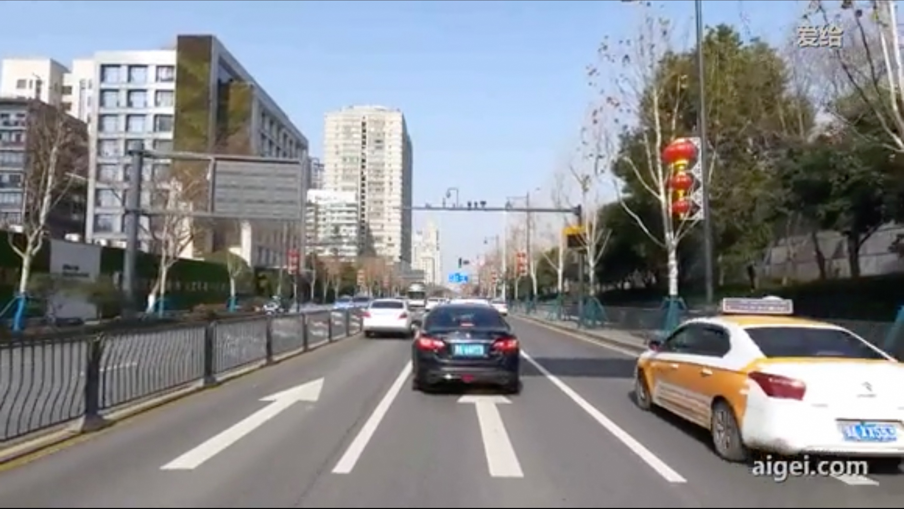
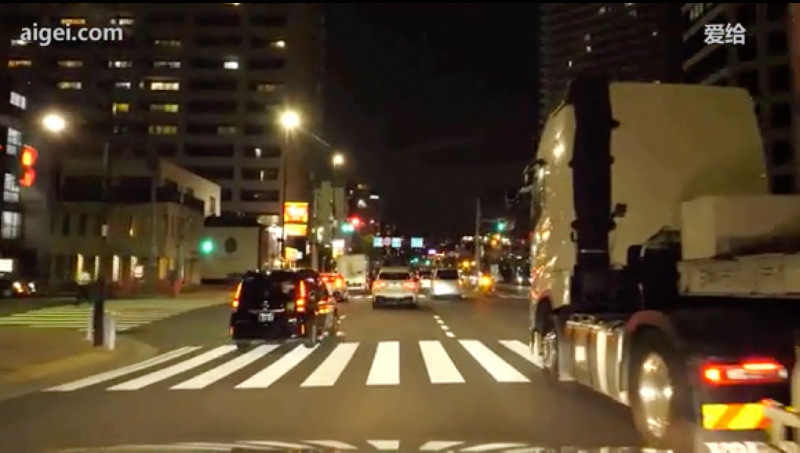
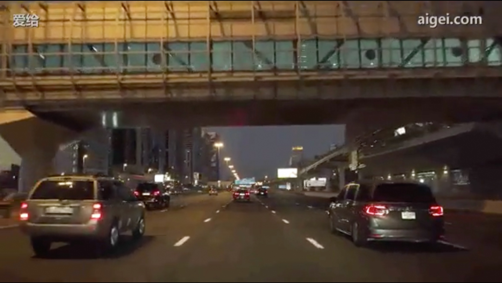
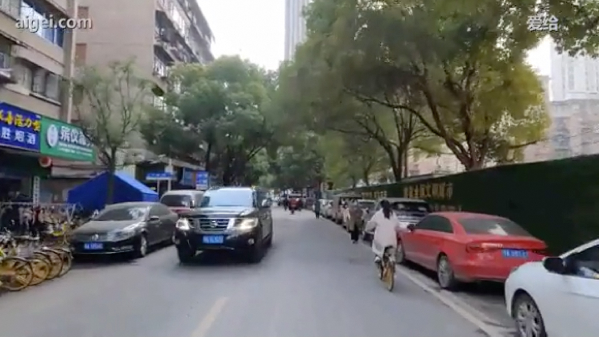

| 驾驶场景的智能理解 | |
|  | 图片展示了一条繁忙而狭窄的街道，看起来像是城市夜市环境。从驾驶员的视角来看，道路上元素密集，这需要小心和专注的驾驶。前方有一辆配备激光雷达传感器、标有“WeRide”字样的自动驾驶汽车正在拥挤的路上行驶。在这样复杂的环境中，这辆自动驾驶汽车可能为其他驾驶者确定了可靠的速度和路线。在左边，一排街头小吃摊档灯火通明，吸引着可能不经意间穿过狭窄道路的行人。右侧则有更多的车辆，包括一辆白色的面包车，其乘客可能在参与夜市活动。霓虹灯的招牌和中文字符增加了这个繁忙而混乱的氛围，使视野和导航变得具有挑战性。车辆的移动、摊贩和行人混杂在一起，这需要驾驶员提高警惕，频繁查看后视镜，并可能降低驾驶速度以避免事故。要安全通过这个拥挤地区，需要与周围车辆保持安全距离，准备好随时停车，并预判行人移动。高级驾驶辅助系统，例如行人检测和防撞系统，可以有效地增强驾驶员在这个动态环境中驾车的能力。 |
|  | 在您作为驾驶员的视角拍摄的图像中，您正在穿过一个拥挤的城市区域。图像右边是一个贴有“WeRide”和“Robotaxi”标志的蓝色自动驾驶汽车，这显示了在这个环境中已经有自动驾驶车辆的应用。在您视角的左边，一个戴着口罩的骑自行车的人，这表明有非机动车交通的存在，需要您保持警惕以确保安全。在您的前方和右侧，一辆满载农产品的车辆停靠在路边，这显示了即兴市场或送货情景，占用了部分道路，需要您小心驾驶以避免潜在的碰撞或干扰。繁忙的街道上有很多行人，他们出现在一座似乎是超市的周围，显眼的“Welcome”标志以中英双语显示，突出了这个地区的多元文化性质。这个熙熙攘攘的环境表明，驾驶时需要特别注意，因为在相对狭窄的城市空间内，有各种车辆、自行车和行人互相交织。作为智能驾驶助手，应该重点实时监控周围车辆和行人的动态，以确保在这个拥挤和复杂的道路环境中顺利、安全地驾驶。 |
|  | 当你在这条繁忙的街道上行驶时，你会注意到一个复杂的元素混合体，这需要提高警惕和小心。最引人注意的是两个骑着手推三轮车的人，他们正在向你行进的右侧移动。距离你最近的那个人似乎正转弯并进行对话，这可能意味着他们的方向或速度会有不可预测的变化。在他们的右边，有一名摩托车骑手正驶向一个路口，而左边的一辆蓝色出租车正试图从旁边的小道并入交通流。这个场景因一辆白色面包车和其他几辆车，包括你右边的车，都在狭窄的空间内机动行驶而更加复杂。街道两侧有许多商店和企业，色彩鲜艳的招牌增加了视觉上的混乱。商店前也有行人，表明这里人流量很高。在这样的拥挤区域安全行驶需要适当刹车、注意观察、并保持安全距离，同时需预判骑车者和从各个方向驶出车辆的动作。 |
|  | 该图像展示了一个繁忙的城市道路场景，有多辆汽车和自行车，呈现出复杂的驾驶环境。前景中，一名骑行者正骑着一辆黄色共享自行车，直接在你前方，需要你密切关注并保持安全跟车距离，以应对可能的突然停车或转弯。左侧有一辆车正在并入车流，可能需要你调整速度或车道以维持安全顺畅的交通流。道路稍向右弯，上方有一座高架桥，可能会影响你对交通信号或其他车辆从匝道进入的能见度。中距离可以看到一个绿灯，表明当前车道的交通流应该暂时保持畅通。右侧的人行道上有行人和其他骑行者，这提示你需增加警觉，注意可能的横穿或突然进入道路的情况。在导航过程中，建议保持适中的车速，同时对混合交通状况保持警惕，以确保安全，并应对驾驶环境中的任何突发变化。 |
|  | 这张图片展示了一个城市道路的驾驶视角，提供了清晰的导航信息和交通状况。道路有四条车道，中间有隔离护栏，将行驶方向分开，你正处于中间两条车道中的一条。前方有几辆车，距离适中，需要你保持安全的跟车距离，特别是黑色和白色车牌的车辆正在前方行驶。最右侧的是一辆出租车，表明你处在一个可能有频繁停靠车辆和乘客上下车的区域，需要注意其突然停车或变道。道路两旁有高大的建筑物和树木，同时可以看到一些红色的灯笼装饰，提示行驶中的节日或活动氛围。前方交通灯和指示牌清晰可见，确保注意信号的变化和指示。这种环境要求你保持适度的速度，密切关注前方车辆的动向和周围环境变化，以确保安全和顺畅的驾驶体验。 |
|  | 这幅图片捕捉了夜间繁忙的城市驾驶场景，展现了一种活跃的氛围。你正在穿越城市中一条照明良好的街道，四周是高楼大厦，灯火通明，表明这是一个集合了住宅和商业区域的地段。前方的多车道公路上，车流适中，除了一些轿车外，还有像卡车这样的大型车辆。道路上标记有清晰的白色斑马线，提示可能有行人活动，需要谨慎驾驶。注意到前方有交通信号灯，绿灯允许继续向前行驶，但稍微向左看可以看到相邻街道的红灯，表明这是一个需要小心通过的交叉路口。同时，旁边车道有一辆大卡车行驶，强调了保持安全距离和协作共享车道的重要性。路标和交通流量表明这是一个有序且受管控的环境，因此在行进时需要对任何突然的停车或交通动态变化保持警惕。 |
|  | 这张图片展示了一个夜间繁忙程度适中的多车道公路，从驾驶的角度来看，有助于提升智能驾驶体验。明显的车道标记清晰可见，有助于保持正确的车道纪律。车辆以稳定的速度行驶，保持着安全的跟车距离，确保安全并有足够的反应时间。上方的人行天桥是一个显著的地标，表明这是一个城市环境，可能会有更多的行人和车辆出口。路灯和明亮的广告牌显示出良好的总体可视性，尽管周围的高层建筑可能会偶尔造成光线遮挡。需要注意的是，由于天桥结构的原因，可能会有不太显眼的合并车道或出口匝道。总体而言，这种场景支持安全和高效的驾驶，通过提供足够的导航和周围环境提示，使自适应巡航控制和车道保持辅助等功能优化驾驶体验。 |
|  | 在图中，您正在一条较为狭窄的城市道路上驾驶，道路两旁停满了车辆，这可能需要您谨慎行驶。在左侧，有一排连在一起的自行车，显示为共享单车站点，提示附近有更多骑自行车的人。您前方有一辆SUV，似乎正在行驶，其周围还有其他车辆，这可能意味着交通拥堵，导致您的行驶速度减慢。在右侧，有一名骑自行车的人正在行进，您需保持安全距离，特别是因为他离您的车道非常近且移动可能不可预测。周围区域有浓密的绿树和住宅楼，这可能会遮挡视线，使您需要警惕从中穿出的行人。此外，右侧的围栏标识着正在进行的施工，这可能意味着道路上有潜在的危险或突如其来的交通流变化。总体来说，保持对周围环境的高度警觉并根据情况调整车速对于在此环境中安全驾驶至关重要。 |